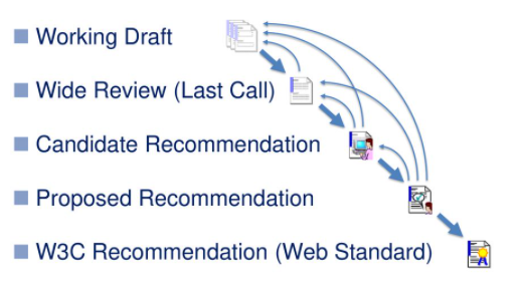
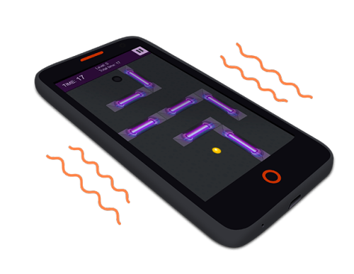
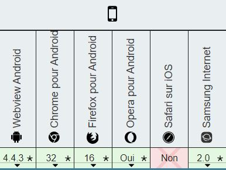
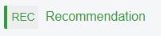
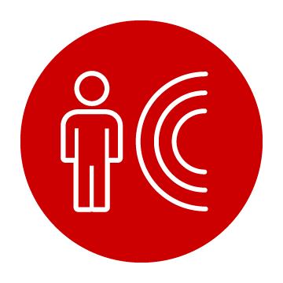
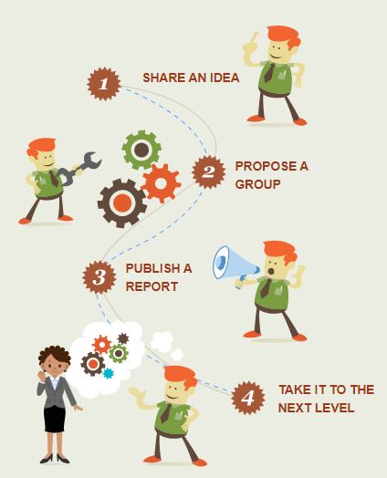
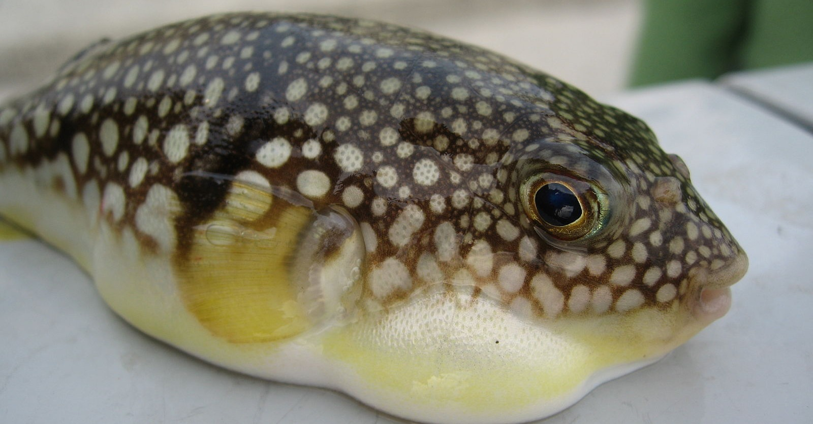

#TechAway n°1
Et si on s'amusait avec les web API
Proposé par Nicolas Payneau
Les #TechAway c'est quoi?
- Point de 30 minutes en rapport avec nos métiers
- Technique, Méthologies, Processus, Veille technologique, Outils
- Pour tous, sans jugement et avec de la bienveillance
Qui suis-je?
(Nicolas Payneau le jour)
- Architecte Logiciel
- Lead Dev
- Software craftman


Qui suis-je?
(Nicolas Payneau la nuit)
- Technophile
- Code lovers
- Crypto lovers
- ...
- Insomniac
Disclaimer
Tout ce qui suit existe depuis plus de 5 ans et sera une dose de rappel pour certains et peut être une découverte pour d'autres ;-)
Le monde des API web se divise en 3 types d'API
- Device APIs
- Communication APIs
- Data managements APIs
The question
Puis-je créer une application web qui utilise tous les capteurs de mon téléphone? Quelles sont les limites?
Dose de rappel sur le W3C
- World Wide Web Consortium
- Existe depuis 1994
- Développer des standards pour le web
- Equipe fixe + des membres d’entreprises partenaires
Processus 2018 du W3C
Tu es prêt?

Le vibreur
Les caractéristiques
- Un seul entier, décrivant le nombre de millisecondes à vibrer
- Tableau d'entiers décrivant un modèle de vibrations
Exemple de code
Démo sur mobile npayneau.github.io/webAPI/demo
La compatibilité
 
Cas d'usage
- Retour de touche sur une application web
Le capteur de luminosité
Les caractéristiques
- Renvoi une valeur comprise entre 0 et 5000
- Se mesure en lux
Exemple de code
Démo sur mobile npayneau.github.io/webAPI/demo
La compatibilité
Depuis la version 60 de Firefox il faut activer device.sensors.ambientLight.enabled dans la configuration de Firefox
Cas d'usage
- Adapter une interface en fonction de la luminosité (ex: Maps)
- Passage de thème automatique
Le capteur d'orientation

Axes: Alpha (Z), Beta (X), Gamma (Y)

Représente la rotation de l'appareil sur un axe
- Alpha(Z) entre 0° et 360°
- Beta(X) entre -180° à 180°
- Gamma(Y) entre -90° à 90°
Exemple de code
Démo sur mobile npayneau.github.io/webAPI/demo
La compatibilité
Cas d'usage
- Permet d'analyser l'usage des utilisateurs sur votre site
- Réalité virtuelle
- Réalité augmentée
- Jeux
L'accéléromètre

Les caractéristiques
- Envoyé quand il y a un changement d’accélération
- Possibilité de prendre en charge la gravité
Exemple de code
Démo sur mobile npayneau.github.io/webAPI/demo
La compatibilité
Cas d'usage
- Réalité virtuelle
- Réalité augmentée
- Jeux
- Détection de déplacement de l'utilisateur
La géolocatlisation

Les caractéristiques
- Sous permissions
- Permet d'avoir la localisation
- Handler sur le changement de position
Exemple de code
Démo sur mobile npayneau.github.io/webAPI/demo
La compatibilité
Cas d'usage
- Application web divers
- Réseaux sociaux
User Media API
Les caractéristiques
- Récupération du flux vidéo
- Définition de la qualité du flux vidéo
- Récupération du flux audio
Exemple de code
Démo sur mobile npayneau.github.io/webAPI/demo
La compatibilité
Cas d'usage
- Application web de gestion
- Application de type réseaux sociaux
Le capteur de proximité
Les caractéristiques
- Retourne la proximité mesurée de l'appareil distant (distance en centimètres)
- Minimum et maximum de la valeur détectée
Exemple de code
Démo sur mobile npayneau.github.io/webAPI/demo
La compatibilité
Depuis la version 60 de Firefox il faut activer device.sensors.proximity.enabled dans la configuration de Firefox
Le lecteur Bluetooth

Les caractéristiques
- GATT: Generic Attribute Profile
- Serveur>Service>caractéristique>Valeur
- Chaque caractéristique peut être lue / écrite / passée en mode notification
Résumé du GATT

Exemple de code
Démo sur mobile npayneau.github.io/webAPI/demo
La compatibilité

W3C Community Group

Cas d'usage
- Application de controle d'un device
Sensor API

Sensor API
- API proposée par le W3C
- API actuellement en « Candidate recommendation » depuis le 12 décembre 2019
Que propose l'API
- Accelerometer
- Gyroscope
- LinearAccelerationSensor
- AbsoluteOrientationSensor
- RelativeOrientationSensor
- AmbientLightSensor
- Magnetometer
Exemple de code
Démo sur mobile npayneau.github.io/webAPI/demo
La compatibilité
Et après, on pourrait parler plus longuement de :
Web assembly / Notification / Gyroscope / WebWorker / WebuSB / WebRTC / FileReading / WebXR / Gamepad / Speech Recognition / WebSocket / Payment / ...
Connaissez-vous le FUGU?
Le projet FUGU
- Inclu dans le projet Chromium
- Ouvert à tous les contributeurs et organisations
- Principaux contributeur Microsoft, Intel, Samsung et Google (entre autres)
- Expérimental donc ne fonctionne pas partout
Le projet FUGU

API intéréssantes proposées
Web NFC / Native FileSystem API / Wake lock API / Contact Picker / SMS Receiver API / Web Serial API / Shape Detection API
Si vous souhaitez en savoir plus
Merci de votre attention
Place aux questions / réponses